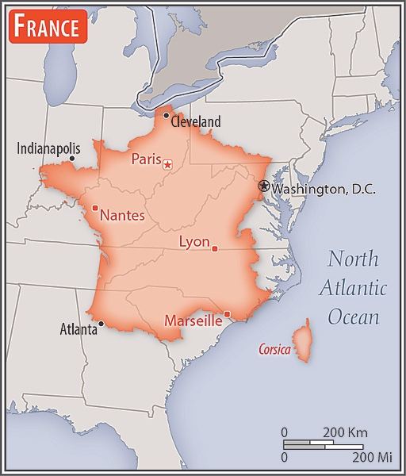

Introduction
France today is one of the most modern countries in the world and is a leader among European nations. It plays an influential global role as a permanent member of the United Nations Security Council, NATO, the G-7, the G-20, the EU, and other multilateral organizations. France rejoined NATO's integrated military command structure in 2009, reversing DE GAULLE's 1966 decision to withdraw French forces from NATO.
Since , it has constructed a hybrid presidential-parliamentary governing system resistant to the instabilities experienced in earlier, more purely parliamentary administrations. In recent decades, its reconciliation and cooperation with Germany have proved central to the economic integration of Europe, including the introduction of a common currency, the euro, in January 1999. In the early 21st century, five French overseas entities - French Guiana, Guadeloupe, Martinique, Mayotte, and Reunion - became French regions and were made part of France proper.
Image source: CIA World Factbook
Geography
Location:
Metropolitan France: Western Europe, bordering the Bay of Biscay and English Channel, between Belgium and Spain, southeast of the UK; bordering the Mediterranean Sea, between Italy and Spain;
Climate
| Region | Climate |
|---|---|
| Metropolitan France | generally cool winters and mild summers, but mild winters and hot summers along the Mediterranean; occasional strong, cold, dry, north-to-northwesterly wind known as the mistral |
Natural Resources:
Metropolitan France: coal, iron ore, bauxite, zinc, uranium, antimony, arsenic, potash, feldspar, fluorspar, gypsum, timber, arable land, fish; French Guiana: gold deposits, petroleum, kaolin, niobium, tantalum, clay
People and Society
Nationality:
- noun: Frenchman(men), Frenchwoman(women)
- adjective: French
Ethnic groups:
- Celtic and Latin with Teutonic, Slavic, North African (Algerian, Moroccan, Tunisian), Indochinese, Basque minorities
- note: overseas departments: Black, White, Mulatto, East Indian, Chinese, Amerindian
Language:
- French (official) 100%, declining regional dialects and languages (Provencal, Breton, Alsatian, Corsican, Catalan, Basque, Flemish, Occitan, Picard); note - overseas departments: French, Creole patois, Mahorian (a Swahili dialect)
Government
| Government type: | semi-presidential republic |
| Capital: | Name: Paris For more information, visit the Wikipedia page on Paris. Image source: Wikipedia Geographic coordinates: 48 52 N, 2 20 E Time difference: UTC+1 (6 hours ahead of Washington, DC, during Standard Time) Daylight saving time: +1hr, begins last Sunday in March; ends last Sunday in October Time zone: CET (Central European Time) |